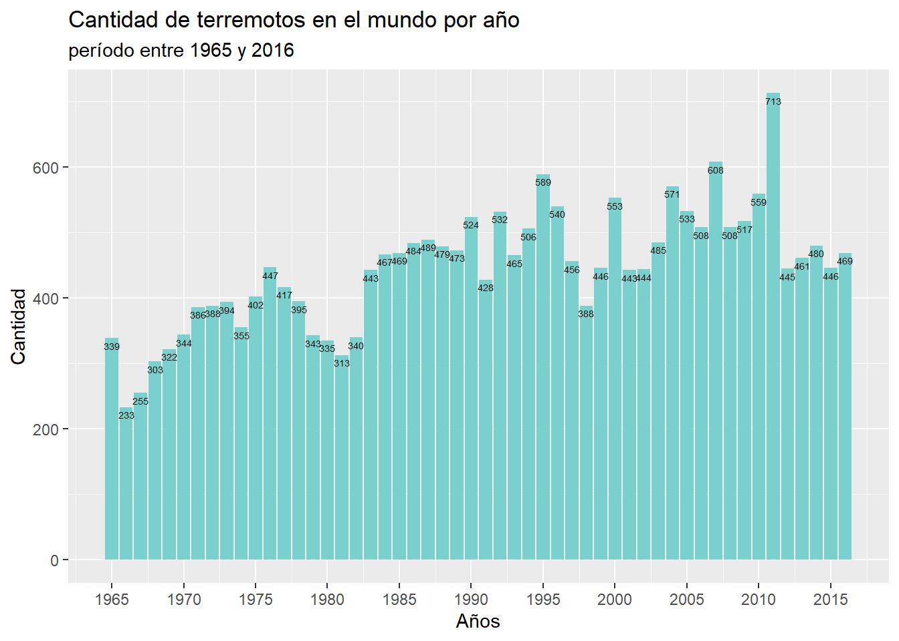

| Descripción de variables | ||
| Variables | Tipo | Descripción |
|---|---|---|
| Fecha | Numérico | Muestra la fecha en que ocurrió el sismo |
| Hora | Numérico | Entrega la hora en que se originó un terremoto |
| Latitud | Numérico | Señala la latitud como coordenada geográfica |
| Longitud | Numérico | Señala la longitud como coordenada geográfica |
| Magnitud | Numérico | Es la magnitud en escala Richter de los terremotos |
| País | Carácter | Corresponde al país en el que sucedió el sismo |
| Fuente: Kaggle.com | ||
Terremotos a nivel mundial desde 1965-2016
Abstract
Los terremotos son una latente amenaza en el mundo que genera grandes daños. Por eso es importante conocer su comportanmiento, por lo que se hizo un analisis descriptivo de una base de datos que contiene los terremotos a nivel mundial con magnitud mayor 5.5 que ocurrieron entre 1965 a 2016. Se encontró que no existe un patrón en la hora en que se originan los sismos. En un futuro, se podria obtener una variable que indica si un terremoto generó un terremoto o no, para asi saber la cantidad de sismo que generan tsunamis.
Introducción
Los terremotos son liberaciones de energía que se emiten a la superficie de la tierra, debido al choque o roce de las placas tectónicas, y puede provocar daños de gran medida los cuales afectan directamente a ciudades y zonas rurales. Además, origina otros desastres naturales, tales como derrumbes o tsunamis. Como todos saben, estos desastres son una latente amenaza para las personas.
Por esta razón, algunas de las preguntas más comunes que se plantean son: a pesar de que los terremotos no se pueden predecir, ¿existe algún patrón en la frecuencia de este fenómeno?, ¿cuántos sismos ocurren aproximadamente en un año?, ¿hay una hora en donde se originan más temblores? y si es esto correcto, ¿cuál es?
Gracias al Centro de Sismología Internacional (CSI), organización mundial que se encarga de registrar la magnitud y la localización de los sismos, es posible acceder a la información recopilada, para hacer innovaciones que podrían prevenir catástrofes graves, o bien, para entender el comportamiento de este fernómeno.
Dejando esto claro, en este informe se realizará un análisis estadístico descriptivo con datos recopilados por el CSI, con el objetivo de entregar información sobre los países con mayor actividad sísmica y también determinar si es que existe una hora en donde se originan más terremotos.
Este trabajo se divide en cuatro secciones. primero se dará información y contexto sobre qué son los terremotos y por qué es importante hacer mediciones sobre estos fenómeno . A continuación se presentarán los datos que se utilizaran como base para el anaslisis posterior. En la tercera parte se realizará un analisis descriptivo de estos datos a traves del uso de graficos y tablas. Y en último lugar, se realizará una conclusión en la que se identificarán posibles patrones en la magnitud, frecuencia y hora de los terremotos.
Contexto de datos
La base se consiguio con el siguiente enlace: donde se encuentran datos sobre los terremotos de magnitud mayor a 5,5 que han acontecido desde 1965 a 2016
Existe una variable llamada “tipo”, en la que indica el origen del terremoto, en este trabajo se usa unicamente por origen de contacto entre placas tectonicas.
Por otro lado, se realiza una geolocalizacion inversa, en la que se usan la longitud y la latitud como coordenadas geograficas para poder conseguir el país en donde ocasiona un sismo.
En adición, en la variable fecha, se usaran solo los años, y en la variable hora, se usara solamente en la cual sucede un sismo
Descripción de variables
La siguiente tabla muestra las variables que se usarán en el análisis , a que tipo corresponden, y una breve definición sobre la información que entregan.
En este trabajo se usarán en su mayoria las columnas que contienen la fechas, horas, magnitudes, y países en las que ocurrieron los terremotos. Para este estudio, solo se considerarán los terremotos con magnitud mayor a 5,5 que ocurrieron desde 1965 a 2016.
Resultados
Se quiere estudiar la cantidad de terremotos que hay en el mundo y su relación con variables tales como año, magnitud, hora, etc. Para ello se adjuntarán gráficos y tablas que entregarán información sobre la frecuencia de los sismos.
Uno de los objetivos de este trabajo es calcular el número de sismos que hay en el periodo de un año, para así conocer el rango de repetición de estos fenómenos. Con este propósito el siguiente gráfico visualiza la cantidad de terremotos que ha habido en el mundo en cada año, desde 1965 hasta 2016:

Se puede apreciar, que el 2011 fue el año con la mayor cantidad de sismos en el planeta, con un total de 713 terremotos. Esto se puede deber a las réplicas que fueron originadas por el terremoto de magnitud 9,1 en Japón, el día 11 de marzo. Por el contrario, el año con la menor cantidad de sismos fue en 1966 con la suma de 233 temblores, esto podría explicarse a que en esa época no existía aún la tecnología necesaria para recopilar todos los terremotos que ocurrían en el mundo.
Ahora bien, se quiere dar un enfoque nacional, por lo que el siguiente grafico muestra la cantidad de terremotos que ocurren por año.
Se puede apreciar que el periodo con mayor cantidad fue el 2010, esto se podria explicar a que son las replicas producidas por el terremoto de magnitud 8,8 el dia 27 de febrero.
Por otro lado, se quiere conocer como se distribuye la cantidad de sismos que hay, dependiendo de la hora en que ocurre. para ello, se realiza el siguiente grafico

se puede ver que relativamente existe el mismo numero de sismos en todas las horas del dia
Tabla que muestra los cinco terremotos de mayor magnitud entre 1965 y 2016.
| Fecha | Magnitud | País |
|---|---|---|
| 2004 | 9.1 | Indonesia |
| 2011 | 9.1 | Japón |
| 2010 | 8.8 | Chile |
| 1965 | 8.7 | Rusia |
| 2005 | 8.6 | Indonesia |